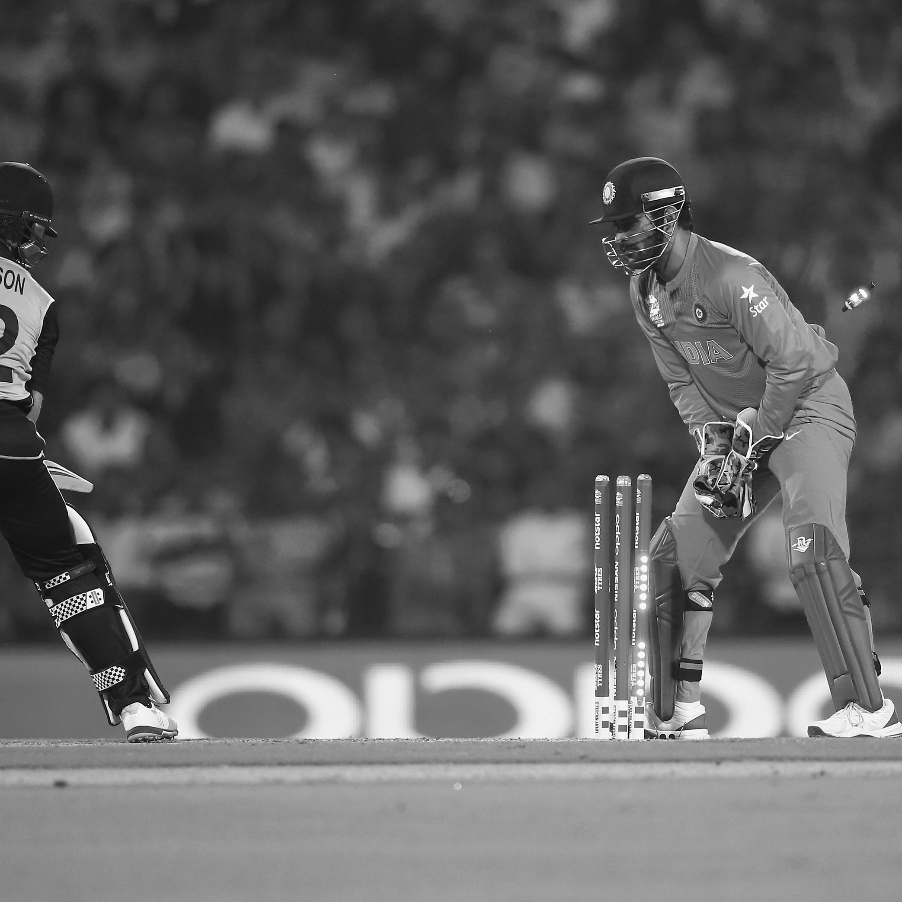

THALA FOR A REASON
The man behind the wicktes

Mahendra Singh Dhoni doing stumping in a cricket match.
Timelaps of THALA'S life
- Born:July 7, 1981, in Ranchi, Bihar (now in Jharkhand), India.
- Cricket Debut:
- ODI Debut: December 23, 2004, against Bangladesh.
- Test Debut: December 2, 2005, against Sri Lanka.
- T20I Debut: December 1, 2006, against South Africa.
- Captaincy:
- Named Captain of the Indian Cricket Team in limited-overs formats in 2007.
- Led India to victory in the inaugural ICC World Twenty20 in 2007.
- 2008:Led the Indian team to victory in the CB Series in Australia.
- 2009:Guided India to the No. 1 ranking in Test cricket for the first time.
- 2010:Led Chennai Super Kings (CSK) to the Indian Premier League (IPL) title.Story of Becoming Thala Began.
- 2011:
- Captained India to victory in the ICC Cricket World Cup, with the final held on April 2, 2011.
- Awarded the Rajiv Gandhi Khel Ratna India's highest honor in sports.
- 2013:Led CSK to another IPL title.
- 2014:Announced retirement from Test cricket in December.
- 2016:Stepped down as captain of the limited-overs formats.
- 2018:Retired from international T20 cricket.
- 2019:
- Led CSK to another IPL title.
- Announced retirement from international cricket on August 15, 2020.
- Post-Retirement:Continued to be associated with CSK in the IPL.
"Face the failure, until the failure fails to face you."--MAHENDRA SINGH DHONI